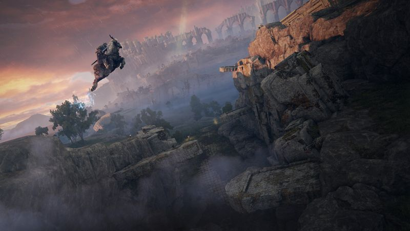
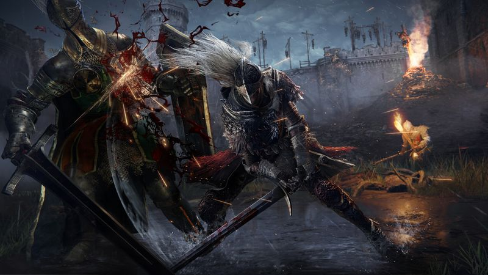

The thirty-second version
The one that got the dads back into FromSoft.
First time we paused a boss fight for maths homework and came back to the same problem.
ELDEN RING is the game FromSoftware make when they finally have the time. Every corner has a boss, every corner has a lie, every corner has one more copper-plated statue with something better than it inside. It runs the risk of asking for too much of a life. It's still the most alive open world any of us has been in, and the co-op summoning is the best thing FromSoft have done for people over forty.
Okay, what is this thing?
You wake up in a place called the Chapel of Anticipation. Roughly ninety seconds later, a large gentleman on a large horse takes your head clean off. You wake up again, this time in a proper level, and someone gives you a horse of your own who can double-jump on gusts of wind. From that moment on, ELDEN RING is a game about riding towards a big thing on the horizon and finding out whether the big thing is a windmill or a dragon. Usually a dragon.
What makes it stick is that FromSoft's boss design finally has an escape hatch. Stuck on a wall? Ride past it. Do a legacy dungeon instead. Come back at level sixty with a bigger sword. The open world is a difficulty valve, and it turns twenty years of 'git gud' into something two working parents can actually finish. The bosses are still the point. But now the point respects your bedtime.


Why it escaped the group chat
- An open world Souls-like from FromSoftware with the writing directed by George R.R. Martin.
- Torrent, your horse, can double-jump on updrafts and eat spirit food.
- Cooperative play via summoning signs. Yes, you can help each other with the horseback knight.
Three dads enter
01
Dad Who Skipped the Tutorial
Then I came back and became a Rivers of Blood merchant.
I'm the guy who has never finished a Souls game. This time I did. I respec'd into bleed, summoned any friendly ghost the game offered me, and didn't once feel bad about it. The 'ride around it' escape hatch saved me. So did the other two, three times, using the tarnished summoning ring. Apparently the best part was watching me talk about Godrick like he's a co-worker I'm still mad at.
02
The Descent Guy
Level design that gives me the shivers, and yes, I compared it to Descent.
I mapped every rune farm before the first legacy dungeon fell. I beat Malenia solo without Mimic Tear and posted the video in the group chat. I call Torrent 'Descent for people who can't fly' and the other two cannot make me stop. I'm insufferable when I'm right, and about ELDEN RING I'm right constantly.
03
Normal-ish Dad
Two hundred hours across three of us, no complaints.
The genius bit is co-op. Bring in a mate for a boss you're stuck on, pay them back the following weekend. The game doesn't punish you for playing with your friends, and that's such a novelty. I do wish UI navigation on controller wasn't from 2011, and I'd appreciate more waypoints. Otherwise, one of the best three months of gaming our group chat has had.
Who it is for and what to watch
Invite these people
- Souls veterans who wanted more room to breathe between the beatings
- Souls tourists who bounced off Dark Souls and want an on-ramp
- Anyone with a group chat that will summon them at 10pm
Dad caveats
- Late game does repeat some earlier bosses in dungeons. It's fine, until it isn't.
- UI on a controller is FromSoft-ancient. You'll learn to love it.
- You may lose an entire spring to it, and possibly a summer too
Receipts
Roughly two hundred hours across three of us on PC, mostly co-op weeknights and solo cleanup on weekends; two of us finished the main campaign, the third is still in the Consecrated Snowfield.